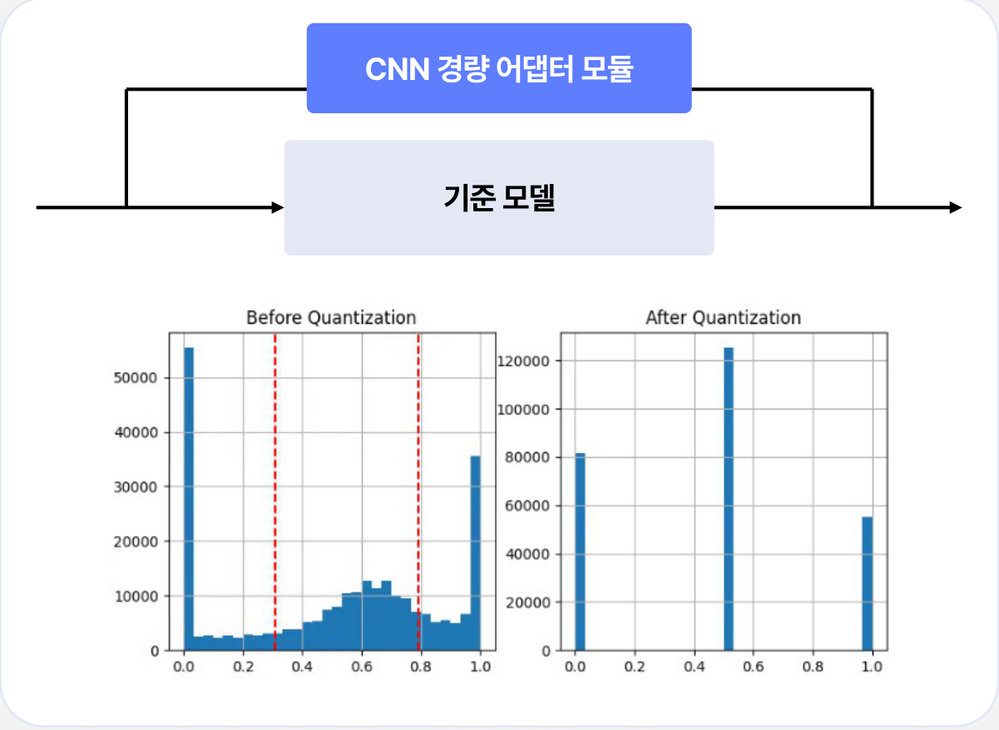
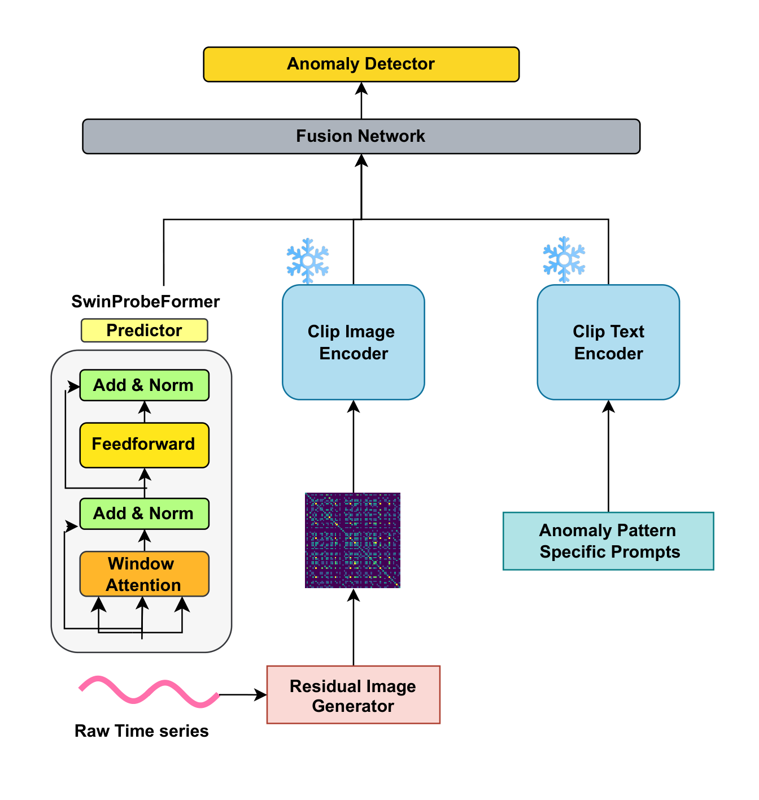

Metrology-Preserving SEM Image Restoration

Low-frame SEM images need restoration without compromising the fine structures used for metrology.
R² = 0.99
0.007 s/imageExplore project →Industrial AI – Semiconductor
AI for SEM metrology and wafer probing equipment intelligence.
Two complementary collaborations address measurement quality, adaptation to new process conditions and equipment fault detection.
SEM imaging and metrology: restoration, few-shot adaptation and virtual voltage imaging.
Low-frame SEM images need restoration without compromising the fine structures used for metrology.

New SEM image distributions require adaptation with limited paired target-domain data.

Selecting voltage conditions for CD measurement can require additional SEM image acquisition.
Wafer probing equipment fault detection: overgain and undergain detection using time-series and multimodal AI.

Overgain faults in wafer probing are associated with probing failures. Long sensor sequences require an effective anomaly detection method.

Undergain faults reduce test throughput and motivate multimodal fault detection.